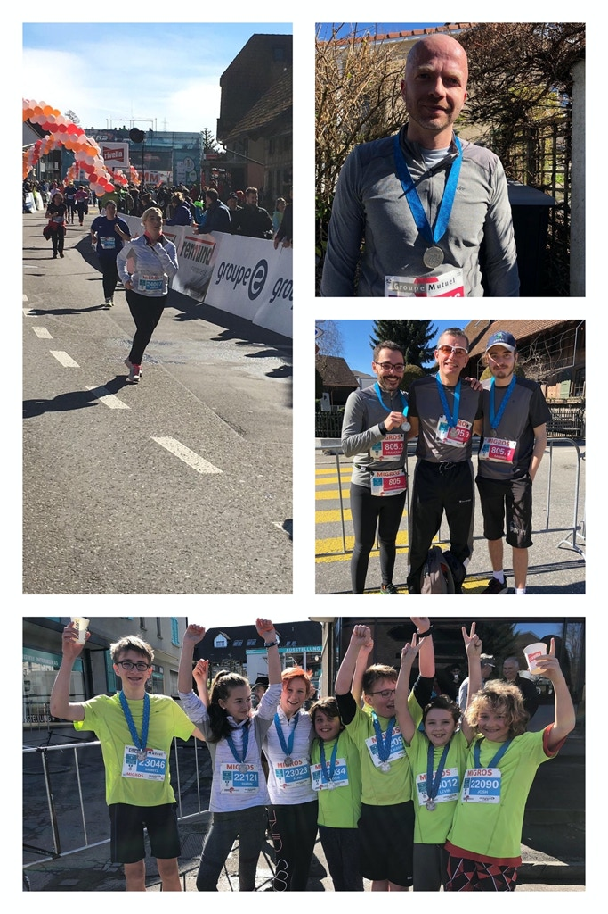

Der Billard Club Kerzers wurde im Jahr 1986 gegründet hatte lange sein Clublokal im Restaurant Bären.
Seit 2016 sind wir an der Industriestrasse 8c!
Wir sind ein Privatclub und für CHF 250.- im Jahr kann jedes Mitglied ohne zusätzliche Tischmiete frei
trainieren.
Zusätzlich empfehlen wir uns für Firmenevents, Kindergeburtstage, Ferienpässe, etc.
Schulklassen der Schulen Kerzers und Umgebung sind für Schnupperanlässen herzlich willkommen!
News:
Folgende SpielerInnen qualifizierten sich für die Halbfinals an den Schweizermeisterschaften 2019:
Damen: S. Cisternino (8-Ball, 14/1 endlos),
C. Keller (8-Ball), I. Zurbuchen (9- u.10-Ball) Jugend: Shirin Volery (8- u.10-Ball, 14/1 endlos), Levin Bätscher (9- u. 10-Ball)
Ebenfalls eine Medaille gab es in der Liga B Meisterschaft, dort konnte sich Yannis Bätscher im 9er Ball
einen
Podestplatz sichern!
Die Finalspiele finden vom 15.-17. November 2019 im Casino Montreux statt.
Hier geht es zum Zeitplan —>
Der Billard Club Kerzers bei TeleBielingue!
Hier geht es zur Sendung. Es sind
mehrere Teile, dazwischen Eishockey ;)
Der Billard Club Kerzers am Kerzerslauf 2019.
Als die Jugendabteilung beschloss, am Kerzerslauf teilzunehmen, meldeten sich erfreulicherweise auch ein
paar aktive
Erwachsene an! So gingen schlussendlich nach Abzug aller Kranken 7 Jugendliche und eine Frau beim 5km Lauf
an den Start,
ein Mann bei den 15km und 3 Herren bei der 15km-Staffel! Herzlichen Glückwunsch zu dem tollen Erfolg -
grandioser
Einsatz! Nächstes Jahr dürfte eine erneute Teilnahme anstehen wenn der Turnierkalender es zulässt ;)
